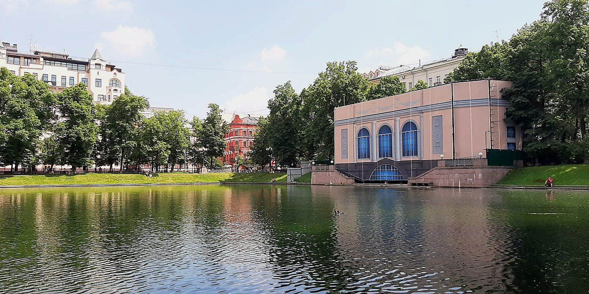

День 02 · суббота, 7 ноября
Лето посреди ноября
Суббота без часов — и один вечер, который притворяется летом.

Фото: Yaroslav Alekseev, CC BY-SA 4.0
- Гостиница
- Сафмар Аврора Люкс
- Гуляем по центру: Патриаршие, бульвары, Арбат. Маршрут дорисую — темп выбираем на месте
Вечер
Едем на юг, к Шаболовской — Дом винтажной музыки, Орджоникидзе, 1: пятнадцать минут от отеля
Ужин рядом с театром — чтобы не искать еду после
«Один день лета»: Цветаева, Бродский, Левитанский под гитару и скрипку. Час сцены и полчаса открытого микрофона
Двенадцать минут до отеля — и никакой программы
Чего хочется от этого дня
- Медленного утра и города без плана: Патриаршие, бульвары, Арбат — и кофе ровно тогда, когда захочется.
- Вечера, где не надо сидеть смирно: подпевать, если поётся, танцевать, если ноги сами, и, может быть, выйти на сцену и рассказать про своё лето.
- Если захочется тепла и тишины — Музей Пушкина на Пречистенке: мы всё равно будем рядом, а заходить или нет — решим на месте.
- Между прогулкой и спектаклем оставлено время на ужин. Не в спешке, но и не поздно.
ℹ️ Спектакль
Начало в 20:00, Орджоникидзе, 1 — «Дом винтажной музыки». Билеты уже куплены. Час без антракта плюс полчаса открытого микрофона: в финале на сцену можно выйти самому.